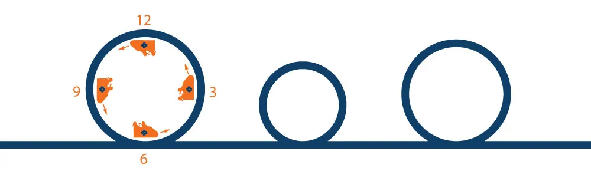

Loopingmodellen i praktiken – en loop i taget
Stora förbättringsprogram tappar ofta riktning innan de hinner leverera. Loopingmodellen delar upp utvecklingen i avgränsade loopar med ett mätbart resultat i varje varv.

Loopingmodellen bygger på en enkel idé: i stället för ett stort förbättringsarbete utan tydliga avstämningar delas utvecklingen upp i avgränsade loopar. Varje loop får ett business case, ett genomförande och en kontrollerad effekt.
De fyra stegen
- Besluta. Ett business case för nästa loop beslutas och genomförandet startar.
- Genomföra. Förbättringsåtgärder genomförs enligt plan, med tydligt ansvar och löpande framdrift.
- Kontrollera. Resultatet kontrolleras mot business case för att säkerställa att önskad effekt har uppnåtts.
- Slutföra. Förbättringsarbetet slutförs och leverans samt presentation förbereds inför nästa loop.
Ett exempel
Tänk dig en organisation där projekt regelbundet blir försenade för att beslut dröjer. Ett traditionellt angreppssätt vore att starta ett större program för att se över hela projektstyrningen.
Med Loopingmodellen börjar man mindre. Den första loopen kan handla om en enda sak: att alla projekt ska ha en tydlig beslutslogg och en utsedd beslutsfattare per fråga. Business caset beskriver vad det förväntas ge – till exempel kortare väntan på beslut – och hur det ska mätas.
Efter genomförandet kontrolleras resultatet. Blev väntetiden kortare? Om ja: arbetssättet befästs, lärdomarna dokumenteras och nästa loop tar form. Om nej: lärdomarna blir ingång till en justerad loop.
Varför det fungerar
- Överblickbart. En loop är tillräckligt liten för att alla ska förstå vad den ska åstadkomma.
- Mätbart. Varje loop har ett business case att kontrollera mot.
- Styrbart. Ledningen fattar beslut loop för loop, med facit från föregående varv.
- Lärande. Varje avslutad loop gör organisationen lite bättre på att genomföra nästa.
Läs mer om Loopingmodellen.